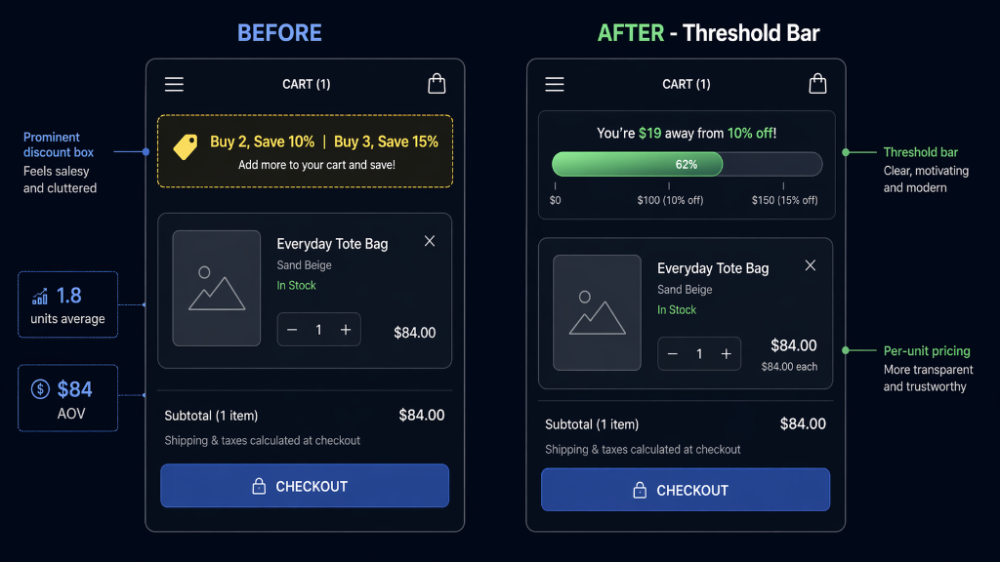

158 More Orders, $17,899 Less Revenue
A direct-to-consumer lifestyle and apparel brand running a bulk discount in the cart: buy more, save more. There was an internal argument about it. One side thought the discount messaging confused single-item buyers and suppressed Conversion Rate (CVR). The other thought it was the engine of multi-unit volume. I ran a controlled test to resolve the debate — and the result proved that CVR and revenue are not the same metric. If I had optimized for one, I would have shipped a variant that destroyed the other.
Phase 1: The Internal Debate
The cart page displayed a prominent "Buy 2, Save 10% · Buy 3, Save 15%" block. Roughly a third of the brand's order volume came through that mechanism. The cart experience also felt commercial — noisy, discount-heavy, optimized for buyers who were going to buy multiple units.
The argument inside the team was reasonable on both sides:
- Position A — the merchandising team: "The discount drives multi-unit volume. Remove it and Average Order Value (AOV) collapses."
- Position B — the CRO / UX team: "The discount confuses single-item buyers. We're losing the one-item purchaser who doesn't care about saving 10% on two items. Our CVR is suppressed."
Both positions had real evidence behind them. The only way to resolve the argument was a clean test measuring both outcomes at the same time.
Phase 2: The Test
A controlled A/B on the cart page:
- Control: bulk discount messaging visible in the cart as-is
- Variant: bulk discount messaging completely removed — clean cart, single-item focus
Instrumentation on both arms measured:
- Conversion Rate (CVR)
- Revenue Per Visitor (RPV)
- Average Order Value (AOV)
- Estimated Profit Per Visitor using the brand's actual unit economics
The last metric was the one most teams skip. It is the one that matters.
Phase 3: The Paradox
Phase 4: Why the Numbers Moved Like This
The variant gained orders by capturing single-item buyers who previously didn't convert because the cart felt too commercial. It lost revenue because it simultaneously eliminated the multi-unit signal that drove the higher-AOV behavior. Both effects were real. The one that mattered for the business was the revenue effect.
Phase 5: The Action
I declared the Control the winner. Same-day readout to the executive team — not as a failed test, but as a clarifying one. The original argument was resolved, but not the way either side expected.
The new question was no longer "should we show the discount." It was: how do we make the upsell signal feel like value rather than pressure? The discount was load-bearing for revenue. It just wasn't the right shape for the cart experience.
Phase 6: The Threshold Bar Pivot
The intervention that followed was a dynamic progress bar at the top of the cart — gamified, not transactional.
Dynamic threshold bar in the cart
The old discount box said: "Buy 2, save 10%." Prescriptive. Commercial. Noisy.
The threshold bar said: "You're 62% of the way to 10% off." Status-of-progress, not call-to-action. The discount became the reward for a goal the buyer was already pursuing — a full cart — rather than an instruction telling them to buy more than they had planned.
A complementary intervention shipped on the PDP at the same time: the per-unit price at different quantities visible directly on the product page, so the multi-unit decision was made upstream of the cart, not rediscovered in it.

Before: Prominent "Buy 2, Save 10% | Buy 3, Save 15%" text block in cart. Prescriptive, commercial-feeling. Drove multi-unit AOV ($84) but confused single-item buyers — suppressing CVR.
After: Dynamic threshold progress bar: "You’re $19 away from 10% off!" with animated fill at 62%. Gamified, not transactional. Per-unit pricing surfaced on PDP upstream so multi-unit decision is made before cart. +8.83% ATC, +14.31% RPV, $65K/mo incremental.
Phase 7: Results
The threshold bar generated more revenue than the original discount box did — because it reframed the upsell from a disruption into a progression. The buyer who would have ignored "Buy 2 save 10%" engaged with "Add $19 more to unlock 10% off" because the second framing made the incentive contingent on a threshold they had some control over, not a prescription they hadn't asked for.
Tools & Stack
What This Engagement Taught Me
- Track the metric that matters, even when it's harder to calculate. Conversion Rate is easy to measure. Profit Per Visitor takes thirty extra seconds of analyst time. Those thirty seconds are the difference between shipping a variant that feels like a win and shipping a variant that destroys the margin.
- If the business runs on multi-unit economics, a "win" on single-item conversion is not a win. It's a tax disguised as one. Every engagement's first question should be: what does this brand's revenue actually depend on? Then pick metrics accordingly.
- A clarifying test is as valuable as a winning one. This test did not win. But it resolved an internal argument that had been blocking the roadmap, and it generated the exact insight that made the threshold-bar pivot possible. Tests are not failures when they produce learning that changes the next decision.
- Reframing a mechanism often beats removing or keeping it. The discount didn't need to disappear and didn't need to stay. It needed to be reshaped. Threshold psychology (progress toward a reward) beats prescriptive messaging (instruction to buy more) in almost every cart experience I've tested.
- The executive readout is the deliverable. The test result was one slide. The business recommendation — stop debating whether to show the discount, start testing how to reshape it — was the real output. Test results that don't end in a clear next action don't compound into program velocity.